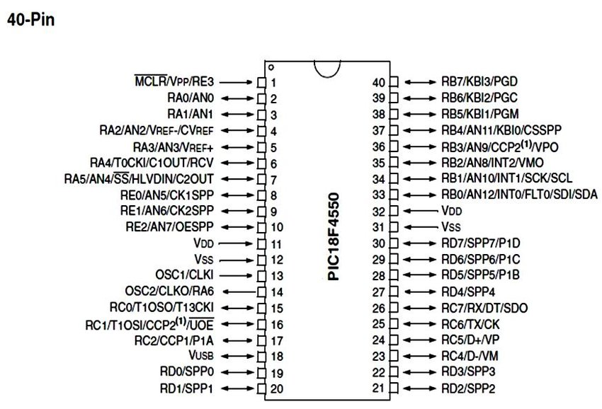

El microcontrolador fue inventado en Texas Instruments en la década de 1970 , alrededor del mismo tiempo que el primer microprocesador estaba siendo inventado en Intel. Los primeros microcontroladores eran simplemente microprocesadores con una función de memoria , como la memoria RAM y ROM. Más tarde, los microcontroladores se desarrollaron en una amplia gama de dispositivos diseñados para aplicaciones de sistemas embebidos específicos en dispositivos tales como automóviles , teléfonos móviles y electrodomésticos. El microcontrolador Primera
CARACTERISTICAS |
CONFIGURACION |
DESCARGA |
|
 | Datasheet PIC18f4550 |